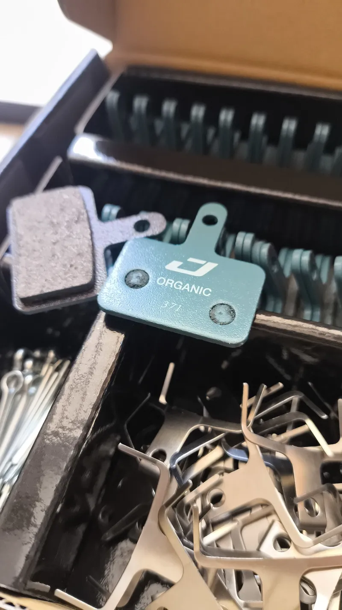
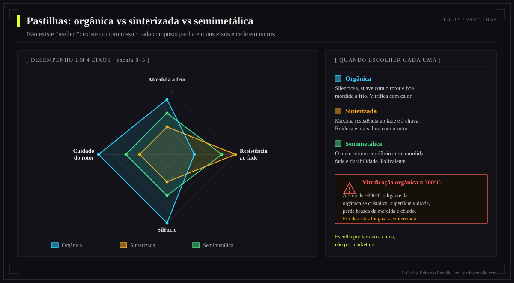
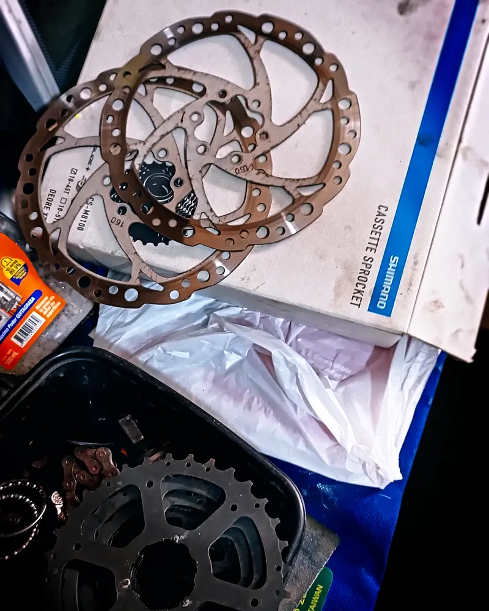
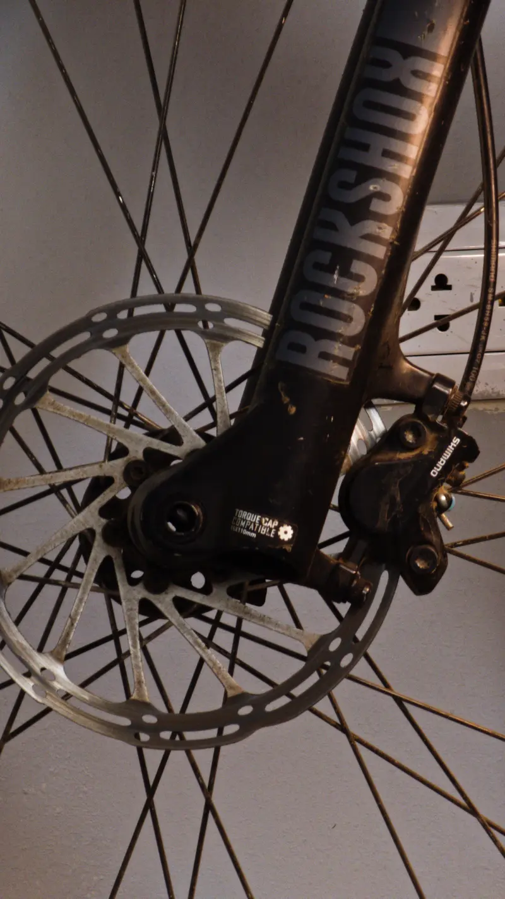
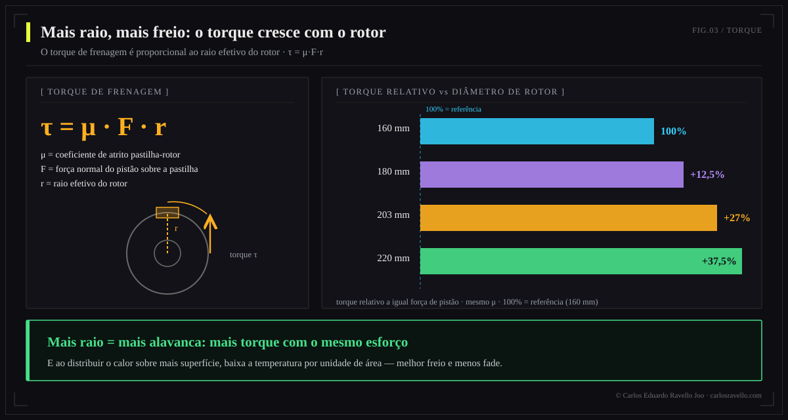
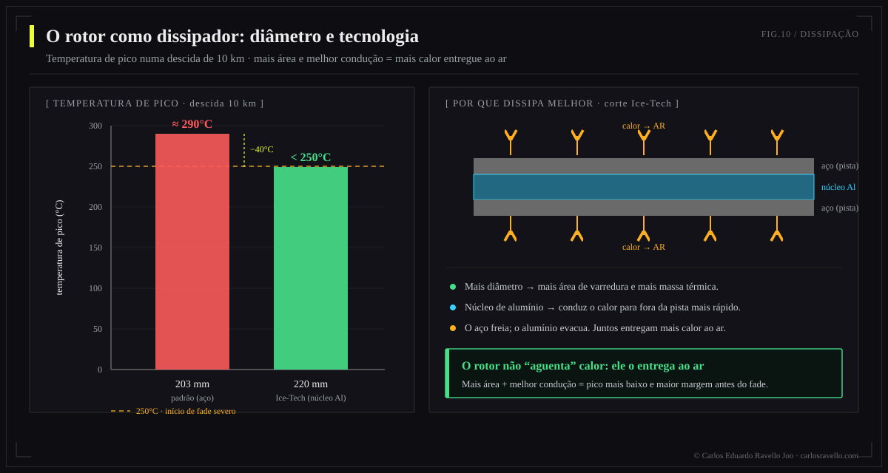
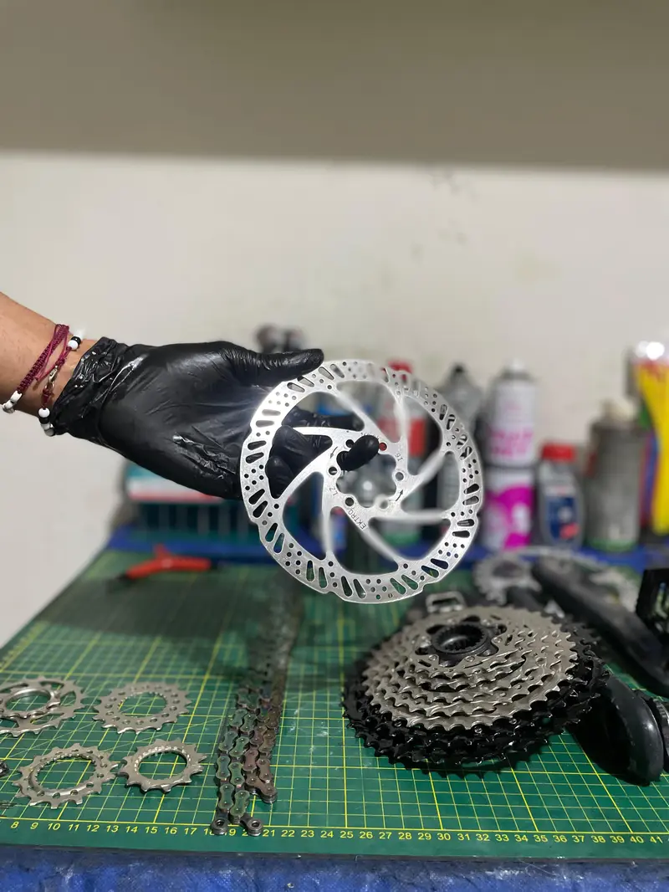

A pastilha define como morde e o rotor define quanto torque e quanto calor você aguenta. Orgânicas: mordida a frio e silêncio, mas vitrificam (~300°C) e duram menos → trail seco/cidade. Metálicas (sinterizadas): resistem calor e água, duram mais → descida, chuva, lama. O diâmetro do rotor manda em descidas longas: passar de 160 a 203 mm sobe o torque ≈27% e dissipa mais calor, evitando o fade. Escolha o par composto+diâmetro conforme a sua disciplina, não por padrão.
Capítulo de atrito e dissipação da Enciclopédia do Freio Hidráulico. O fluido e os pistões apertam; mas quem converte esse aperto em frenagem —e em calor— são a pastilha e o rotor. Aqui se ganha ou se perde uma descida.

Compostos de pastilha: orgânica, metálica, semimetálica
| Composto | Mordida a frio | Resistência ao calor | Duração | Ruído | Ideal para |
|---|---|---|---|---|---|
| Orgânica (resina) | Alta | Baixa (vitrifica ~300°C) | Menor | Baixo | Trail seco, cidade, XC |
| Metálica (sinterizada) | Menor a frio | Alta | Maior | Maior | DH, enduro, chuva, lama |
| Semimetálica | Média | Média-alta | Média | Médio | All-mountain, uso misto |
A janela de temperatura: por que uma pastilha vitrifica
Cada composto tem uma janela de temperatura útil. Abaixo, morde pouco; acima, se degrada. A orgânica entrega muito a frio mas, acima dos ~300°C de frenagem sustentada, sua resina vitrifica: surge a vitrificação, uma camada dura e brilhante que reduz o coeficiente de atrito e chia. A metálica tem uma janela mais alta, por isso aguenta descidas onde a orgânica já "se rendeu".


Uma pastilha nova precisa de rodagem: 15-20 frenagens progressivas de média velocidade sem parar por completo, para transferir uma camada uniforme de material ao rotor. Pular o bedding causa mordida pobre e vitrificação prematura. E nunca toque a superfície de atrito com os dedos engordurados.
O rotor: diâmetro, torque e calor
O torque de frenagem é força × raio. Com a mesma força na pinça, um rotor maior multiplica o torque porque atua com mais braço de alavanca. Passar de 160 a 203 mm aumenta o torque cerca de 27%. Mas o benefício real na montanha é térmico: mais diâmetro = mais massa e mais superfície para absorver e irradiar calor, o que mantém o sistema longe do limiar de fade.



Que diâmetro escolher

160 mm: XC leve, ciclista leve, terreno suave. 180 mm: trail, all-mountain, o equilíbrio mais comum. 200-203 mm: enduro, ciclista pesado, descidas. 220 mm: DH, bikepark, máxima dissipação. Tecnologias como Ice-Tech (núcleo de alumínio) baixam a temperatura do disco várias dezenas de graus frente a um rotor padrão do mesmo tamanho.
Manutenção e contaminação
Troque as pastilhas quando o material de atrito baixa de ~1 mm; os rotores, quando baixam de sua espessura mínima gravada (tipicamente 1,5 mm), empenam ou ficam sulcados. Pastilhas contaminadas com óleo não se recuperam: o óleo penetra o material poroso e se substituem (e se limpa o rotor com desengraxante específico). Um disco engordurado é a causa mais comum de "freio que não morde" após uma manutenção.
BikeLab Studio.
Perguntas Frequentes
Pastilhas orgânicas ou metálicas?
Orgânicas: mordem a frio, silenciosas, modulam bem, mas se desgastam rápido e vitrificam com calor → trail seco/cidade. Metálicas: aguentam calor e água, duram mais, não vitrificam fácil, ao custo de ruído e menor mordida a frio → descida, chuva, lama. Semimetálicas: o meio-termo.
O que é a vitrificação e como evitá-la?
Uma camada vidrada que se forma quando o composto orgânico superaquece (~300°C): a pastilha perde mordida e chia. Evita-se com boa rodagem, evitando frenagens arrastadas, usando o composto adequado e um rotor que dissipe. Às vezes se recupera lixando a superfície.
Quanta potência a mais dá um rotor de 203 vs 160 mm?
O torque cresce com o raio: de 160 a 203 mm sobe ≈27% com a mesma força na pinça, e o disco maior dissipa mais calor, resistindo ao fade. Por isso DH/enduro usam 200-220 mm e o XC leve 160-180 mm.
Por que um rotor maior freia melhor em descidas longas?
Porque ali o problema é o calor acumulado, não a força pontual. Mais diâmetro = mais massa e superfície para absorver e irradiar energia, mantendo a temperatura abaixo do limiar de fade e vitrificação. Ice-Tech baixa ainda mais a temperatura.
De quanto em quanto tempo se trocam pastilhas e rotores?
Pastilhas: quando o material baixa de ~1 mm (ou se vitrificam ou se contaminam com óleo). Rotores: quando baixam da espessura mínima gravada (~1,5 mm), empenam ou sulcam. Pastilhas com óleo não se recuperam: se substituem.
Referências
- Shimano — tecnologia de rotores Ice-Tech e compostos de pastilha (resina vs metálica).
- SRAM / Galfer / SwissStop — guias de composto e rodagem (bedding-in).
- Park Tool — desgaste de pastilhas e rotores; espessura mínima.
- BikeLab Studio — Enciclopédia do Freio (energia, torque e fade).